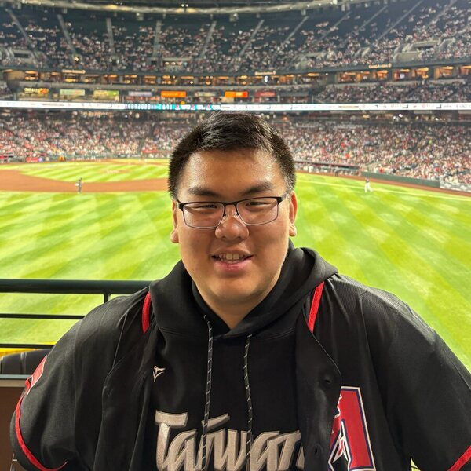

Art Explorer
Node.js · Express · REST APIs · Docker · Google Cloud Run
A full-stack art discovery service integrating the Met Museum, Harvard Art Museums, and Wikipedia APIs with pagination and interactive maps.
I am an M.S. in Computer Science candidate at the University of Southern California, expecting to graduate in May 2027. I am interested in backend, full-stack, cloud, and distributed systems.
Previously, I independently developed a government web application module at Tech-Management Workshop and built a signal-processing pipeline for a portable uric-acid monitoring system at National Taipei University.

Node.js · Express · REST APIs · Docker · Google Cloud Run
A full-stack art discovery service integrating the Met Museum, Harvard Art Museums, and Wikipedia APIs with pagination and interactive maps.
ASP.NET Core · Entity Framework Core · SQL Server · Vue.js
A layered task platform with RESTful CRUD APIs, filtering, sorting, pagination, database indexes, and a Vue 3 client.
C# · .NET 8 · ASP.NET Core MVC · SQL Server
A secure public-sector web application built independently from procurement specifications, including validation, QR codes, and print workflows.
C++ · OpenGL · GLSL · Blender
A real-time renderer with custom model loading, texture mapping, transformations, GPU buffers, and multi-light shading.
Software Engineer Intern · Taichung, Taiwan
Developed, tested, secured, packaged, and deployed a government birth-grant application module using C#/.NET 8 and ASP.NET Core.
Undergraduate Researcher · New Taipei City, Taiwan
Built the Python signal-processing and model-ready data pipeline for a noninvasive uric-acid monitoring system.
IEEE Transactions on Human-Machine Systems, accepted for publication, 2026.
My contribution focused on converting embedded-system signals into quality-controlled, model-ready datasets through filtering, feature extraction, and evaluation workflows.
Master of Science in Computer Science
Expected May 2027
Graduate coursework in Computer Science; transferred to USC
Sep 2025 - Dec 2025
Bachelor of Science in Computer Science
Sep 2020 - Jun 2024